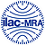

5주
접수에서 성적서 발급까지
정량 목표 7개를 KOLAS 성적서로 증명하다: 스마트팩토리 SW 기업 A사 과제 종료 사례
과제 계획서의 정량 목표가 시험 가능한 형태가 아니어서 항목을 재정의. 응답시간·처리량 등 7개 항목을 ISO/IEC 25023 기준으로 재작성해 1회 시험으로 통과.
과제 일정과 요구 규격에 맞춰 성적서를 설계합니다. 시험 항목 도출부터 성적서 발급까지
고객사 상황에 맞게 코서트가 직접 진행합니다.
시험성적서 안내
코서트는 KOLAS 공인시험기관(KT1353)입니다. 인정 규격 항목은 국가 공인 성적서로, 그 밖의 항목은 의뢰자 제시 방법의 일반 시험성적서로 발급합니다.
KS X ISO/IEC 25023 기능적합성 · ISO/IEC 25024 데이터 품질. 정부 R&D 과제 결과 평가, 조달·입찰, 검수에 쓰이는 국가 공인 성적서. ILAC-MRA 국제 상호인정.
공인시험 자세히 보기 의뢰자 제시 시험발주처 규격서의 고유 요건, 과제의 특수 지표, 성능·부하, 데이터·AI 결과처럼 공인 규격으로 담기 어려운 항목을 의뢰자 제시 방법으로 측정. 영업일 3일 내 가능 여부·견적·발급 예정일 회신.
일반시험 자세히 보기| SW 기능적합성 | 기능 완전성 · 기능 정확성 · 기능 적절성 | KS X ISO/IEC 25023 · 코서트 공인 발급 |
|---|---|---|
| 데이터 품질 | 정확성 · 완전성 · 일관성 · 현재성 | ISO/IEC 25024 · 코서트 공인 발급 |
| 성능 · 부하 | 응답시간 · 처리량 · 동시사용자 · 자원 사용률 | 코서트 일반시험(V&V) 진행 |
| 보안 · 시큐어코딩 | 취약점 진단 · 시큐어코딩 · 접근 통제 | 코서트 진행 · 클라우드서비스 확인제 연계 |
| HW · IoT · 전파 | 전자파 적합성 · 전기 안전 · 무선 · 환경 시험 | 코서트 진행 · KC 적합성평가 연계 |
인증 안내
인증마다 요구하는 시험 항목과 서류가 다릅니다. 코서트는 인증별 담당자가 대상 판별부터 심사 대응까지 함께합니다.
어떤 인증이 필요한지 문의회사소개
(주)코서트는 2026년 7월 KOLAS 공인시험기관(인정번호 KT1353)으로 인정받았습니다. 소프트웨어 기능적합성과 데이터 품질 공인시험성적서를 직접 발급하고, 그 밖의 항목은 일반시험(V&V)으로 시험하며, GS·KC·클라우드서비스 확인제 인증은 준비부터 취득까지 코서트가 진행합니다.
진행 절차
견적 확인 → 계약 진행 → 시험 접수 → 시험신청서·시험절차서 작성·제출 → 시험 진행 → 시험성적서 발급. 인증은 인증 접수 → 필요 자료 제출 → 인증 진행 → 인증서 발급으로 이어집니다.
견적문의고객사 보호를 위해 익명으로 표기합니다. 시험·인증별로 어떤 항목을 어떻게 증명했는지 확인해 보세요.
5주
접수에서 성적서 발급까지
과제 계획서의 정량 목표가 시험 가능한 형태가 아니어서 항목을 재정의. 응답시간·처리량 등 7개 항목을 ISO/IEC 25023 기준으로 재작성해 1회 시험으로 통과.
1등급
GS인증 첫 심사 통과
인증 접수 전 코서트가 기능 명세와 화면을 대조해 결함 34건을 선제 수정. 조달 등록 마감 3주 전 인증서 수령.
2개
시험기관 병행으로 일정 단축
한 기관의 EMC 시험 대기가 6주였던 상황. 전기안전 시험을 다른 기관으로 분리 진행해 출시 일정 안에 인증 등록.
※ 시안 가상 사례. 실제 사례로 교체 예정.
1,240
누적 성적서 · 인증 진행 건수 (시안 더미)
98%
1회 시험 통과율 (재시험 없이 발급)
2종
KOLAS 공인 규격 (SW 기능적합성 · 데이터 품질)
소프트웨어 기능적합성과 데이터 품질 공인시험성적서를 직접 발급합니다. ILAC-MRA 상호인정으로 해외에서도 통용됩니다.


공인시험은 접수 후 2~3주, 일반시험(V&V)은 1~3주가 기본이며 항목 수에 따라 달라집니다. 인증은 인증기관 처리기간이 더해집니다.
시험은 항목 수와 시료 규모 기준으로, 인증은 인증기관 시험비와 코서트 수수료로 구성됩니다. 자료를 주시면 영업일 2~3일 내 견적을 드립니다.
가장 흔한 상황입니다. 목표의 의도를 유지한 채 측정 가능한 항목으로 재정의하고, 과제 관리기관과의 협의도 코서트가 함께 진행합니다.
시험 대상, 사양서나 기능 목록, 사업자등록증이 기본이며 인증 종류에 따라 추가됩니다. 신청서와 항목 정의서는 코서트가 작성합니다.
연락처만 남겨 주셔도 됩니다. 영업일 1일 내 담당자가 회신합니다.
공평성 선언서
(주)코서트는 KS Q ISO/IEC 17025 요구사항에 따라 시험 활동의 공평성을 유지합니다. 경영진은 시험 결과에 영향을 줄 수 있는 상업적·재정적·기타 압력으로부터 시험 업무를 독립적으로 수행하며, 공평성을 해칠 위험을 지속적으로 식별하고 제거하거나 최소화할 것을 선언합니다.
※ 선언문 본문은 코서트 확정 문안으로 교체 예정. 전문은 회사소개 페이지에 게시합니다.
공평성 선언서 전문 보기